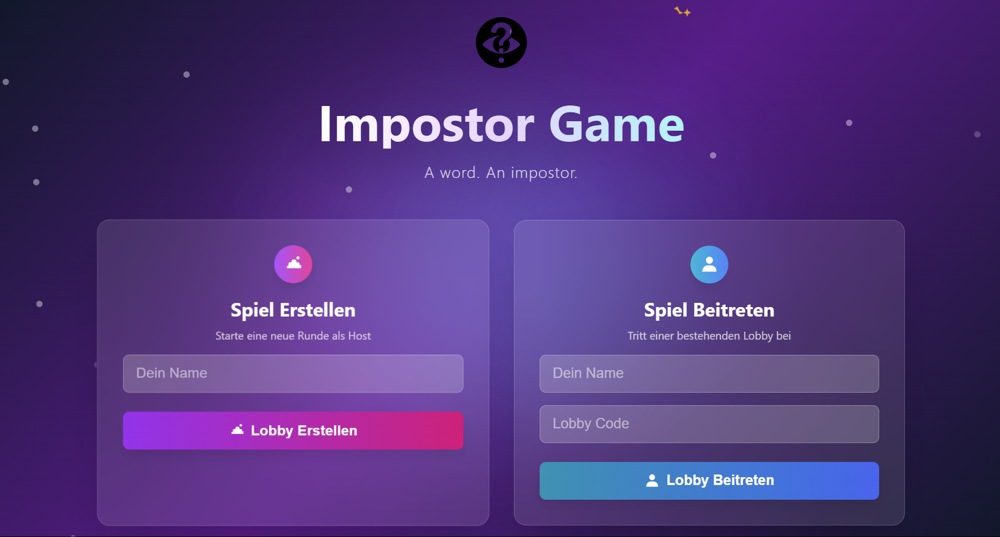

🎭 Imposter-Webgame
Ein soziales Online-Game, bei dem Spieler gemeinsam herausfinden müssen, wer der Imposter ist. Echtzeit-Kommunikation über Socket.IO, modernes Frontend mit Vite und ein eigenes Node.js-Backend.
Technologien: JavaScript, Vite, Node.js, Express, Socket.IO
Status: In aktiver Entwicklung